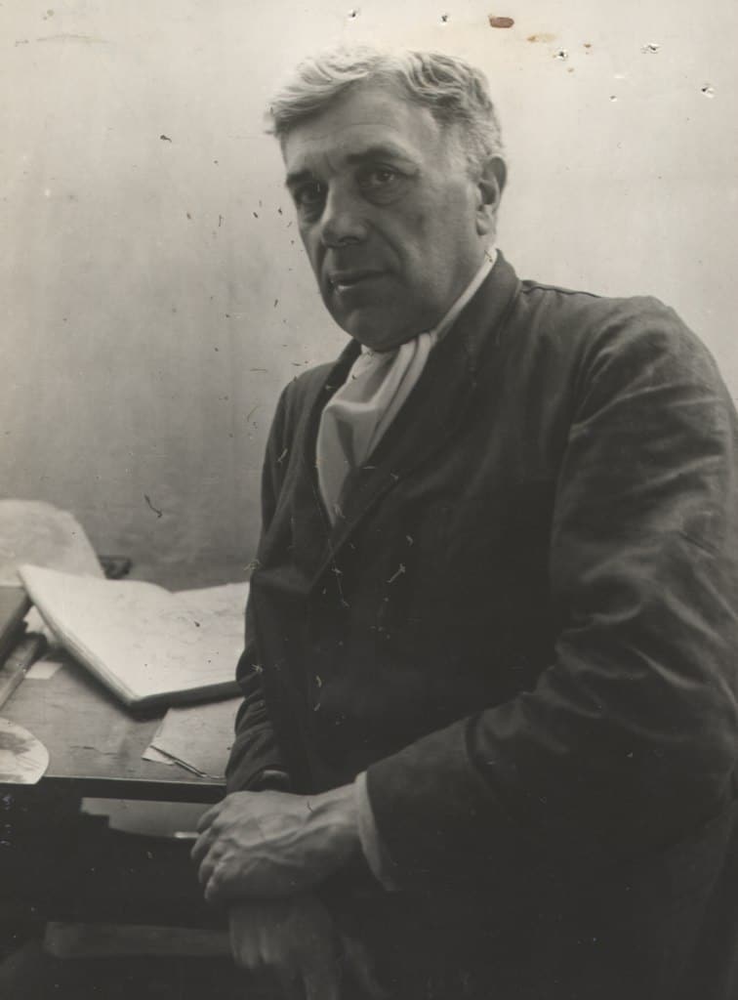
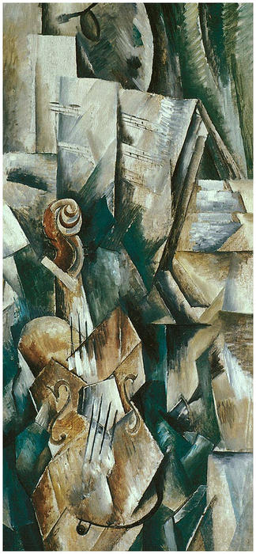
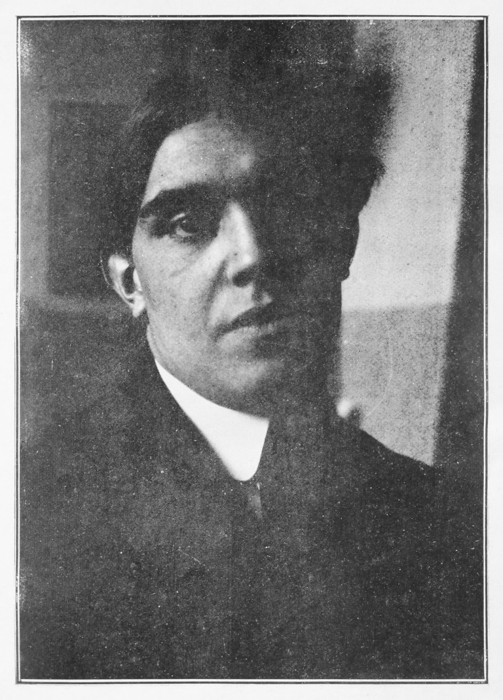
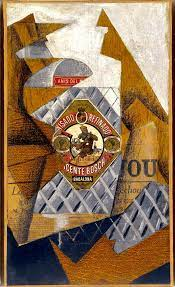

Historia del cubismo
A principios del siglo XX, el postimpresionismo y el fauvismo —dos movimientos inspirados por el enfoque experimental de los impresionistas— dominaban el arte europeo. El pintor, escultor, grabador y dibujante francés Georges Braque contribuyó al movimiento fauvista con sus pinturas policromadas de estilizados paisajes terrestres y marinos.
Georges Braque, detalle de “Paisaje en La Ciotat” (1907). En 1907, Braque conoció al pintor, escultor, grabador y diseñador español Pablo Picasso. En ese momento, Picasso se encontraba en su “periodo africano“, produciendo obras primitivas influenciadas por la escultura y las máscaras africanas. Al igual que las pinturas postimpresionistas de Braque, estas piezas jugaban con la forma (y a veces con el color), pero seguían siendo figurativas. Sin embargo, después de conocerse, Braque y Picasso comenzaron a trabajar juntos, desviándose más de sus estilos anteriores y colaborando para crear un nuevo género: el cubismo.
El cubismo consiste reconocer la naturaleza bidimensional del lienzo y no recrear la tridimensionalidad (cosa que precisamente pretende una figura como el cubo). Para mirar un cubo, hace falta un sólo punto de vista, y lo que querían artistas como Braque o Picasso, inspirados por Cézanne, es mirar un objeto desde todos los puntos de vista posibles. Para entendernos, es como desmontar una caja de cartón y dejarla completamente abierta en una superficie plana, mostrando todo a la vez, y entrelazado. Pero a pesar de ser pintura de vanguardia, los géneros que pintan los cubistas son de lo más clásico: bodegones, paisajes, retratos…
Fases
PROTOCUBISMO
Antes de que el movimiento se pusiera en marcha, tanto Picasso como Braque aplicaron elementos del que sería su futuro estilo a sus respectivos géneros. Esta fascinante transición hacia el cubismo es especialmente evidente en dos de sus obras: Viaducto en L'Estaque (1908) y Las señoritas de Avignon (1907).
Las señoritas de Avignon es quizás la pieza más famosa de Picasso creada durante su periodo africano. Hecha en 1907, esta pintura fue creada en una época entre el primitivismo y el cubismo, como lo demuestran los rostros enmascarados de las figuras y la fragmentación de la composición. Pablo Picasso, “Las señoritas de Avignon” (1907).
El viaducto de L'Estaque muestra el interés de Braque por jugar con la perspectiva y romper los temas en formas geométricas, dos rasgos clave del cubismo.
Braque, 'El viaducto de l'Estanque' Georges Braque, “El viaducto de l'Estanque” (1908).
CUBISMO ANALÍTICO
La primera fase oficial del movimiento se conoce como cubismo analítico. Este periodo tuvo lugar entre 1908 y 1912, y se caracteriza por pinturas caóticas de sujetos fragmentados en tonos neutros.
Las formas fracturadas a menudo se superponen entre ellas, mostrando el objeto desde múltiples perspectivas a la vez.
Picasso también aplicó los principios del cubismo analítico a su práctica escultórica, culminando con una colección de bustos y figuras que enfatizan el enfoque experimental de la fase en cuanto a la perspectiva.
En esta época, otros artistas interesados en las vanguardias se unieron a Picasso y Braque. Uno de ellos el pintor español Juan Gris. Gris se convertiría en otro pintor cubista muy conocido, sobre todo por su papel en el cubismo sintético.
CUBISMO SINTÉTICO
El cubismo sintético es la segunda fase del movimiento, que surgió en 1912 y duró hasta 1914. Durante este tiempo, Picasso, Braque, Gris y otros artistas simplificaron sus composiciones y cambiaron sus paletas de colores, usando tonalidades más vibrantes.
El cubismo sintético demuestra un interés por las representaciones de bodegones, ya sea en forma de pinturas o de collages.
PINTORES CUBISTAS
Pablo Ruiz Picasso (Málaga, 25 de octubre de 1881–Mougins, 8 de abril de 1973) fue un pintor y escultor español, creador, junto con Georges Braque, del cubismo. Es considerado desde la génesis del siglo XX como uno de los mayores pintores que participaron en los variados movimientos artísticos que se propagaron por el mundo y ejercieron una gran influencia en otros grandes artistas de su tiempo. Sus trabajos están presentes en museos y colecciones de toda Europa y del mundo. Además, abordó otros géneros como el dibujo, el grabado, la ilustración de libros, la escultura, la cerámica y el diseño de escenografía y vestuario para montajes teatrales. También tiene una breve obra literaria.
En lo político, Picasso se declaraba pacifista y comunista. Fue miembro del Partido Comunista de España y del Partido Comunista Francés hasta su muerte,2 acaecida el 8 de abril de 1973 a los noventa y un años de edad, en su casa llamada «Notre-Dame-de-Vie»34 de la localidad francesa de Mougins. Está enterrado en el parque del castillo de Vauvenargues (Bouches-du-Rhone).
Si bien exploró una gran variedad de estilos a lo largo de su prolífica carrera, Pablo Picasso es mejor conocido por ser el fundador del cubismo. Influenciado en gran medida por la obra de Cézanne, Picasso rompió con todas las tradiciones al crear obras de arte fragmentadas que jugaban con la perspectiva y favorecían las figuras angulosas.
Obras importantes: Las señoritas de Avignon (1907), Guernica (1937), Retrato de Ambroise Vollard (1910)
Aunque fauvista de origen, Georges Braque cofundó el movimiento cubista de la mano de Picasso. La obra de este pintor y escultor francés se caracteriza por la simplificación de figuras, reduciéndolas a formas cilíndricas y prismáticas. Braque es particularmente conocido por sus naturalezas muertas, donde las guitarras, las mandolinas y los violines son elementos comunes.
Obras importantes: Violín y paleta (1909), Bodegón con mesa: Gillette (1914), El portugués (1911)
 El pintor español Juan Gris nació en Madrid, aunque desarrolló gran parte de su carrera en París. Allí conoció a Braque y Picasso, y decidió dejar de lado la ilustración para dedicarse de lleno a la pintura. Su obra destaca por su estilo sintético y colorido; además, fue un pionero de la técnica de papier collé, en la que recortes de papel y cartón se pegaban sobre el lienzo para combinarse con la pintura.
Obras importantes: Retrato de Pablo Picasso (1912), La botella de anís (1914), El fumador (1913).
 